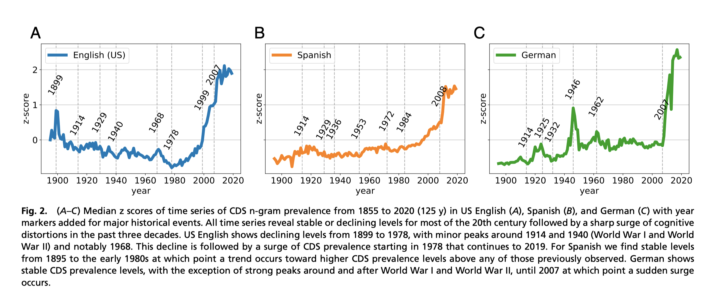
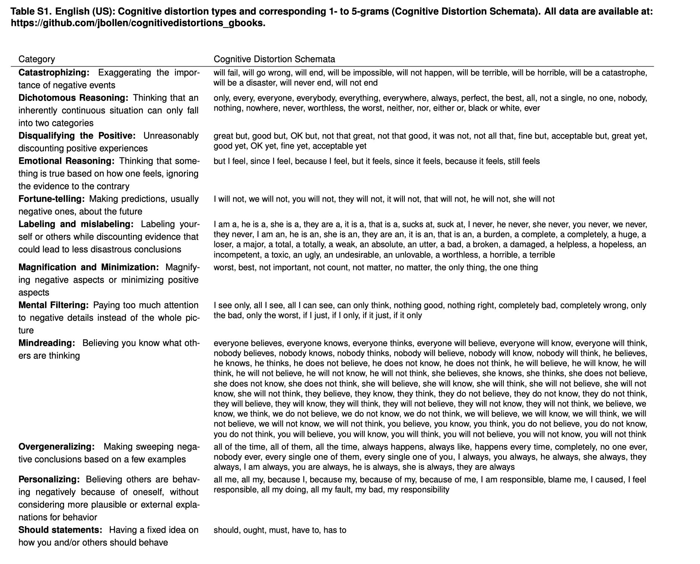

Bollen, Johan, et al. “Historical language records reveal a surge of cognitive distortions in recent decades.” Proceedings of the National Academy of Sciences 118.30 (2021).
摘要
患有抑郁症的人容易出现适应不良的思维模式，即认知扭曲，他们以过于消极和不准确的方式思考自己、世界和未来。 这些扭曲与个人情绪、行为和语言的显着变化有关。 我们假设社会可以经历类似的集体心理变化，这些变化会反映在语言使用的历史记录中。我们调查了过去 125 年超 1400 万本书中认知扭曲（congnition disorder）的文本标记的流行情况，并观察到自 1980 年代以来它们的流行程度激增，达到超过大萧条和两次世界大战的水平。 这种模式似乎不是由词义、出版和写作标准或 Google 图书样本的变化驱动的。 我们的研究结果发现，通过语言分析最近的社会转向与认知扭曲和内化障碍相关。
正文
抑郁症与独特且可识别的适应不良思维模式有关，称为认知扭曲，其中个人以不准确和过于消极的方式思考自己、未来和世界 (9-12)。例如，当个体用消极的、绝对主义的术语（例如，“I am a loser”）给自己贴上标签时，就会出现在抑郁症中看到的认知扭曲。他们可能会用二分法、极端的术语谈论未来事件（例如，“My meeting will be a complete disaster”）或对别人的心态做出毫无根据的假设（例如，“Everybody will think that I am a failure”）。
认知扭曲的类型通常区分许多部分重叠的类型，例如“灾难化”、“二分推理”、“否定积极的”、“情感推理”、“算命”、“标记和错误标记”、“放大和最小化”、“心理过滤”、“读心术”、“过度概括”、“个性化”和“应该陈述”。
**认知行为疗法 (cognitive-behavioral therapy，CBT) ** 是治疗抑郁症和其他内化障碍的黄金标准 (13)，其基础理论认为认知扭曲与内化障碍有关； 它们反映了环境压力下的负面情感和回避行为模式 (14, 15)。 语言与这种动态密切相关。 事实上，最近的研究表明，患有内化障碍的个体在他们的语言中表现出明显更高水平的认知扭曲 (16, 17)，以至于他们的患病率可能被用作抑郁症易感性的指标 (18, 19)。
我们分析了过去 125 年中大量以英语、西班牙语和德语出版的超过 1400 万本书籍（谷歌图书）中的大量认知扭曲标记的流行情况。具体来说，我们正在研究由 CBT 专家、计算语言学家和双语母语人士组成的团队设计的数百个 1 到 5 个单词 (n-gram)、 标记的认知失真图式 (cognitive distortion schemata,CDS) 的纵向流行情况，以及由 CBT 专家小组外部验证，以捕捉 12 种认知扭曲的表达 (9)。 CDS n-gram 被设计为简短、明确和独立的语句，使用频率很高的术语表达特定认知扭曲类型的核心（图 1 和 SI 附录，表 S1-S3）。例如，3-gram 的“I am a”捕获了标签和错误标签失真，而不管其上下文或所涉及的精确标签（“女士”、“尊贵的人”、“失败者”等）。这些相同的 n-gram 在早期的研究中被证明显着更多。
CDS流行度测量
CDS n-gram 显示在灰色框内的示例，周围是合理的上下文词，这些词可能会有所不同，而不会影响 n-gram 是否标记给定类型的认知扭曲的表达（例如，读心术Mindreading、情感推理Emotiona lReasoning、标记Labeling和错误标记Mislabeling） . CDS 是由 CBT 专家、语言学家和母语使用者组成的团队设计的，用于捕捉特定认知扭曲类型的表达，而不管其特定的词汇上下文。 对于英语（美国）、西班牙语和德语，专家团队分别定义了 241、435 和 296 个 n-gram 来标记 12 种常见的认知扭曲类型。 请注意，我们的流行度测量只计算 CDS n-gram 的出现，而不管上下文（“每个人都在思考”、“仍然感觉”和“我是一个”）。 按失真类型提供的所有 CDS n-gram 的完整列表在SI Appendix, Tables S1–S3.

(A-C) 美国英语 (A)、西班牙语 (B) 和德语 (C) 从 1855 年到 2020 年 (125 y) 的 CDS n-gram 流行时间序列的中值 z 分数，其中添加了年份标记 对于重大历史事件。 在 20 世纪的大部分时间里，所有时间序列都显示出稳定或下降的水平，随后在过去的 30 年里认知扭曲急剧增加。
美国英语从 1899 年到 1978 年呈下降趋势，在 1914 年和 1940 年（第一次世界大战和第二次世界大战）以及特别是 1968 年出现小高峰。随后是 CDS 流行率从 1978 年开始激增，并持续到 2019 年。
对于西班牙语 我们发现从 1895 年到 1980 年代初期的稳定水平，在这一点上出现了一个趋势，即 CDS 患病率水平高于之前观察到的任何水平。
德国表现出稳定的 CDS 流行水平，除了第一次世界大战和第二次世界大战前后和之后的强劲高峰，直到 2007 年突然激增。
Data
研究数据谷歌已经开源，开源下载哦
https://storage.googleapis.com/books/ngrams/books/datasetsv3.html
CDS ngram词表
该论文CDS ngram词表

代码
ngram代码实现
from nltk.util import ngrams
from nltk.tokenize import word_tokenize
sentence = "Historical language records reveal a surge of cognitive distortions in recent decades"
words = word_tokenize(sentence)
print('分词结果: ', words)
#2-gram
two_grams = [' '.join(tw) for tw in ngrams(words, 2)]
print('2-gram处理结果: ', two_grams)
#3-gram
three_grams = [' '.join(tw) for tw in ngrams(words, 3)]
print('3-gram处理结果: ', three_grams)
Run
分词结果: ['Historical', 'language', 'records', 'reveal', 'a', 'surge', 'of', 'cognitive', 'distortions', 'in', 'recent', 'decades']
2-gram处理结果: ['Historical language', 'language records', 'records reveal', 'reveal a', 'a surge', 'surge of', 'of cognitive', 'cognitive distortions', 'distortions in', 'in recent', 'recent decades']
3-gram处理结果: ['Historical language records', 'language records reveal', 'records reveal a', 'reveal a surge', 'a surge of', 'surge of cognitive', 'of cognitive distortions', 'cognitive distortions in', 'distortions in recent', 'in recent decades']
统计统计CDS-ngram与ngram频数，进而计算出CDS流行度。